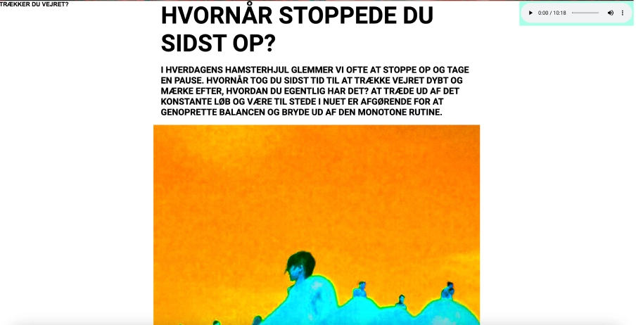
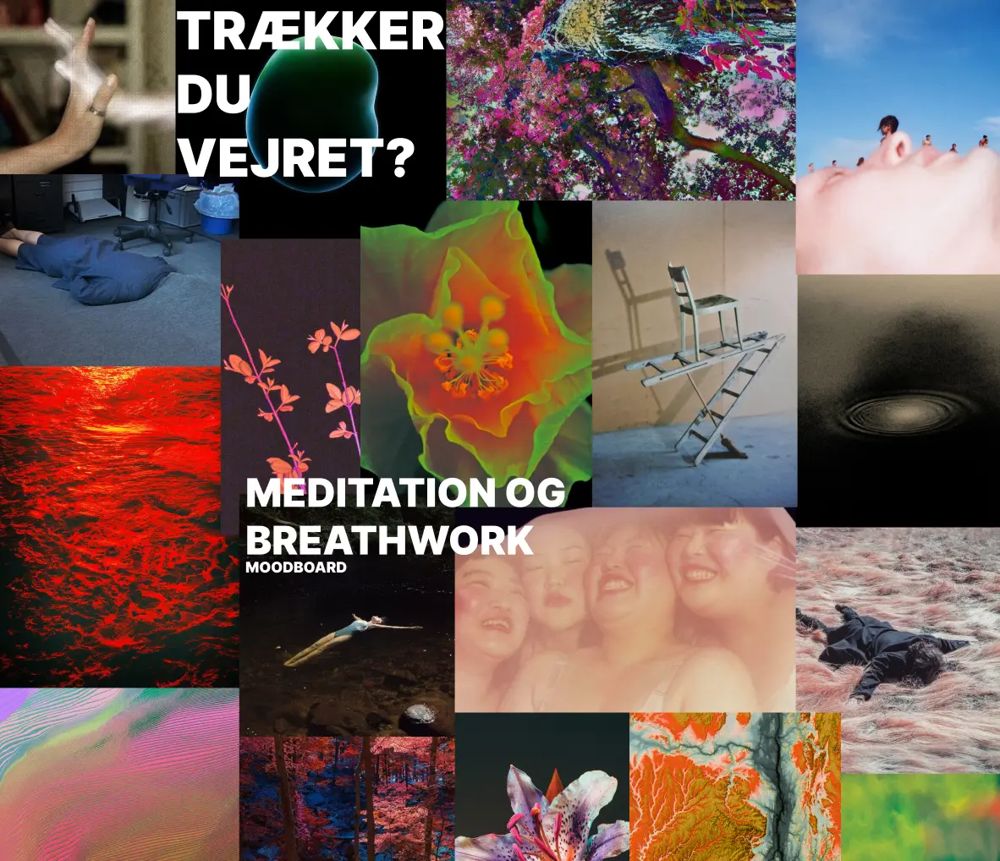

I dette tema blev vi introduceret til User Experience Design (UX) og brugergrænseflader (UI). Vi lærte, hvor vigtigt det er at skabe en balance og et samspil mellem de to, samt betydningen af research og forarbejde. Hvor vi tidligere bare gik direkte til kodningen, blev der nu lagt vægt på at udvikle indholdet først. Vi lærte om forskellige testmetoder og værktøjer, der kunne støtte processen – det var her, jeg virkelig fik øjnene op for Figma. Det gjorde det muligt for mig at præsentere min proces og udviklingen af mit site på en visuel og overskuelig måde.
 ➜ https://emmamunch.dk/emnesite/Opgaven i dette tema var at designe og udvikle et website om et emne, vi selv valgte. Opgaven kulminerede med en præsentation, hvor vi også skulle videreformidle vores proces og begrunde vores designvalg.
Jeg startede med at brainstorme og stillede mig selv fire spørgsmål for at finde frem til et emne:
Det sidste spørgsmål førte mig til emner som spiritualitet, religion, selvhjælp og meditation. Herfra tog min proces form, og jeg besluttede mig for at lave et site om meditation og breathwork. Sitet skulle fungere som en påmindelse, der spørger dig direkte: “Husker du at trække vejret?”
Jeg begyndte at arbejde med user stories, målgrupper og analyser af eksisterende websites. Dette hjalp mig med at definere de værdier, sitet skulle afspejle. Derefter lavede jeg moodboards, redigerede billeder og skabte mit eget billede til forsiden. I takt med processen udviklede jeg også skitser og prototyper.
Under arbejdet med prototyper lærte vi at opbygge et design system i Figma, hvilket gjorde processen mere struktureret. Vi skabte både lo-fi og hi-fi prototyper, som blev brugt til testning, før vi gik i gang med at kode i VS Code.
På den måde havde jeg en tydelig plan for, hvordan jeg skulle kode sitet.
Vi blev introduceret til forskellige typer brugertests, og jeg valgte at anvende:
Mine tests havde stor betydning for designet. Jeg gjorde det mere brugervenligt og minimalistisk end oprindeligt planlagt. For eksempel gjorde jeg skrift og knapper større og tydeligere, så navigationen blev lettere.
Det færdige site blev flot, og præsentationen gik godt med både positive tilbagemeldinger og konstruktiv kritik. Når jeg ser tilbage, ville jeg dog have ønsket at tilføje en menu på alle sider, bredere marginer og korte linjer på maksimalt 75 tegn pr. linje for bedre læsbarhed.